Layer Cakes
Round or tiered
Double layered with filling, finished in buttercream and decorated to your theme.
Birthdays · Showers · Anniversaries
Every reason to gather deserves a good cake.
From a first birthday to a fiftieth anniversary, we design each celebration cake around the person and the party. Choose from our scratch-made flavors and fillings, then tell us your theme, colors or favorite flowers.
Prefer something you can hand out? Our floral cupcakes bring the same hand-piped buttercream flowers to every guest.
Every one of these was designed for one person and one party. Tap any cake to see it up close.
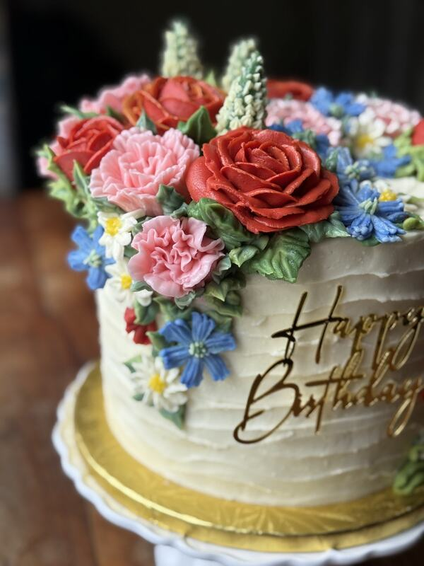
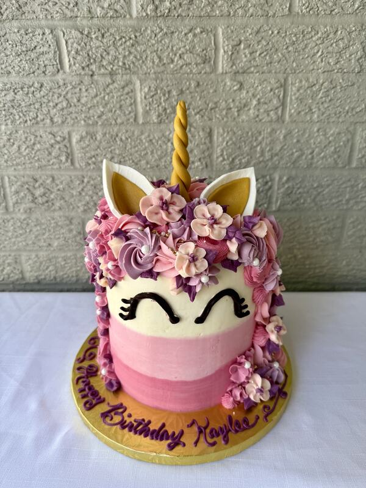
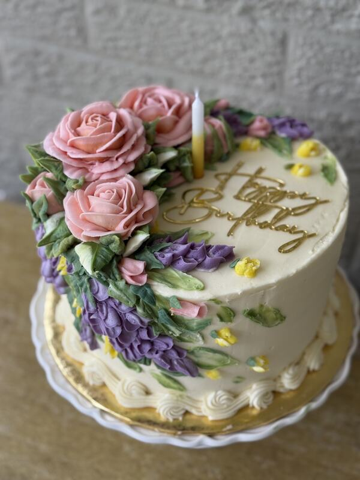
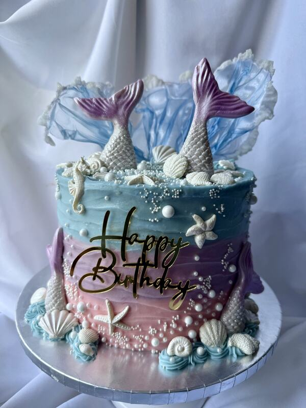
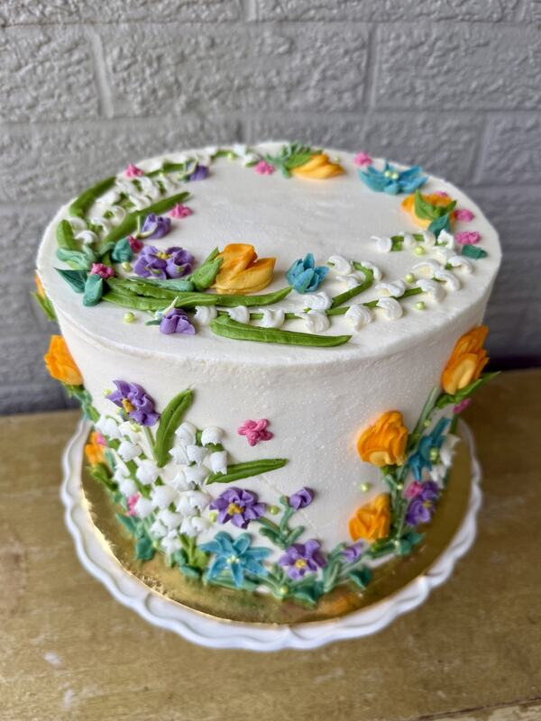
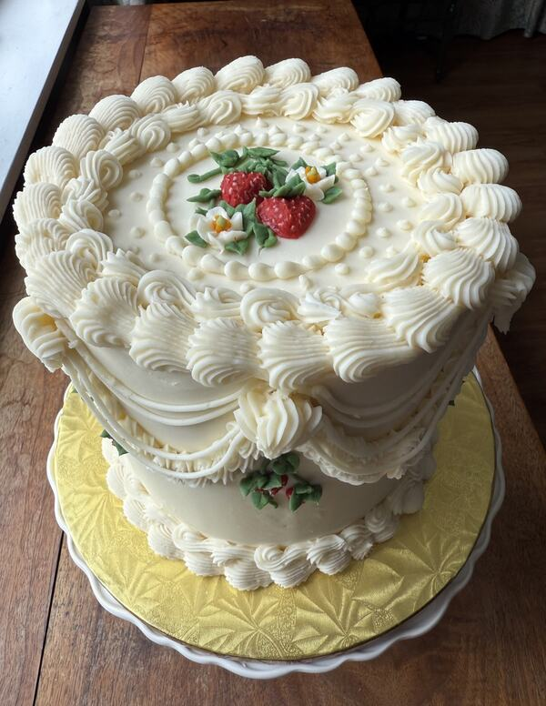
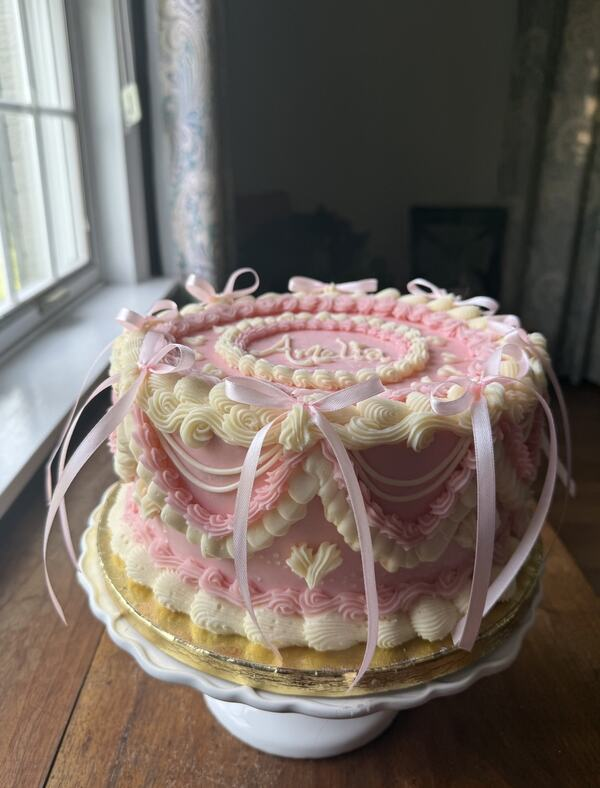
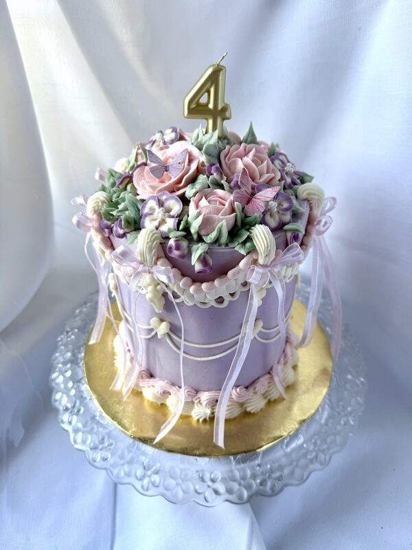
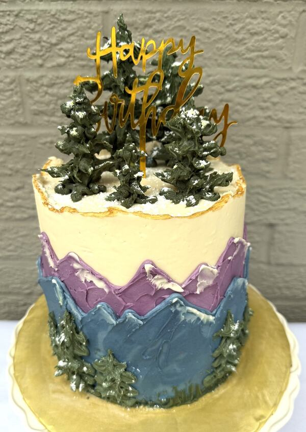
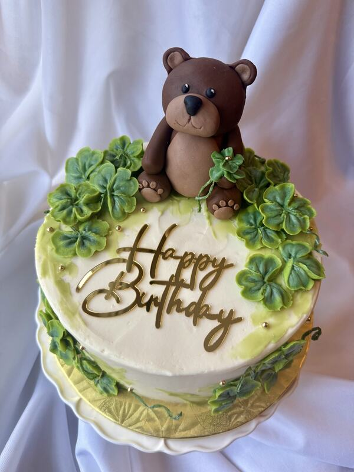
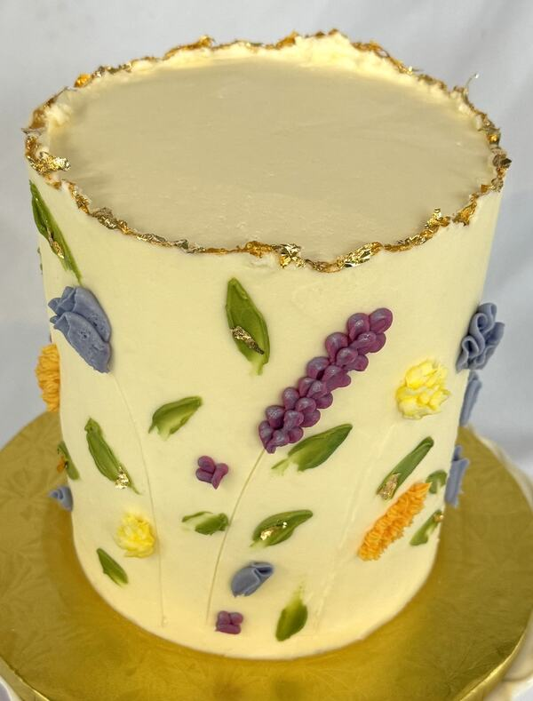
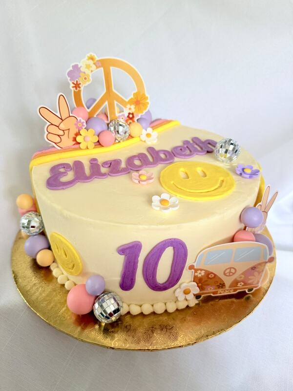
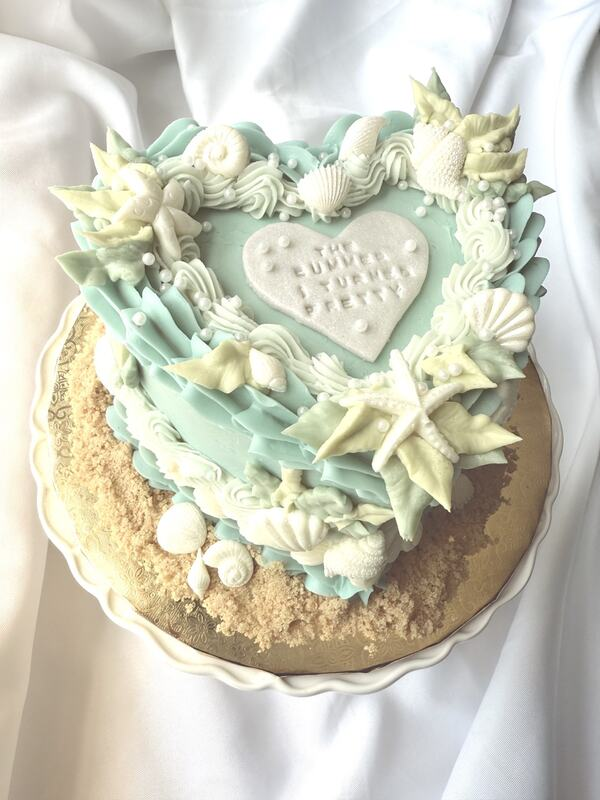
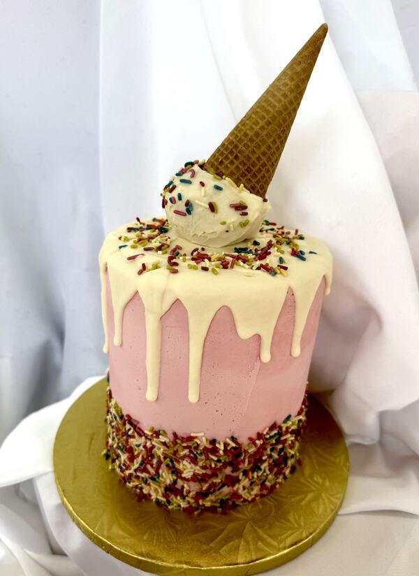
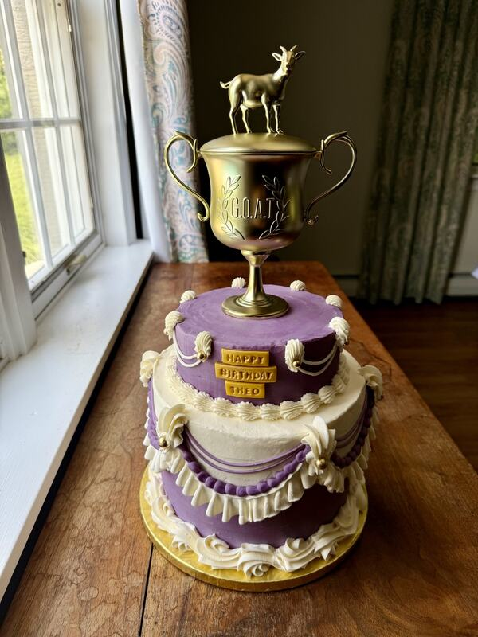
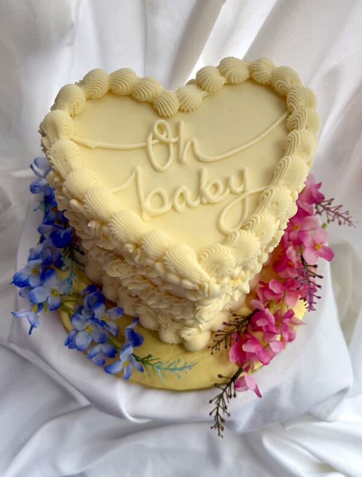
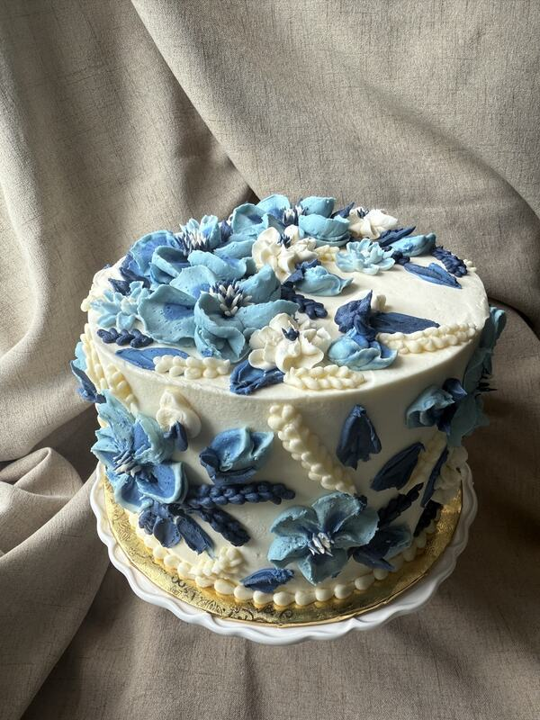
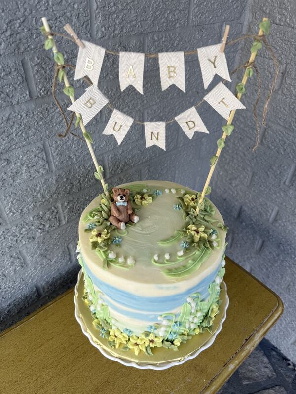
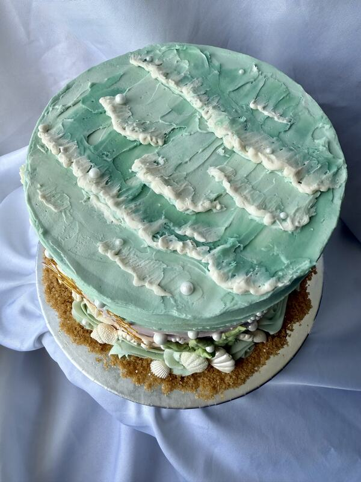
From first birthdays to fiftieth anniversaries, every cake is made for one moment.
Your date, guest count and the occasion.
Flavors, colors and decoration, by phone or message.
We confirm the design, price and pickup or delivery.
Two weeks is ideal, and more for large or tiered cakes. Reach out and we will do our best to fit you in.
Tell us your guest count and we will recommend a size.
Yes, gluten friendly cakes are available. Ask us about other dietary needs.
Tell us what you are celebrating and we will make it delicious.
937-286-2002 hastingsbakehouse@gmail.comServing Dayton · Cincinnati · Columbus